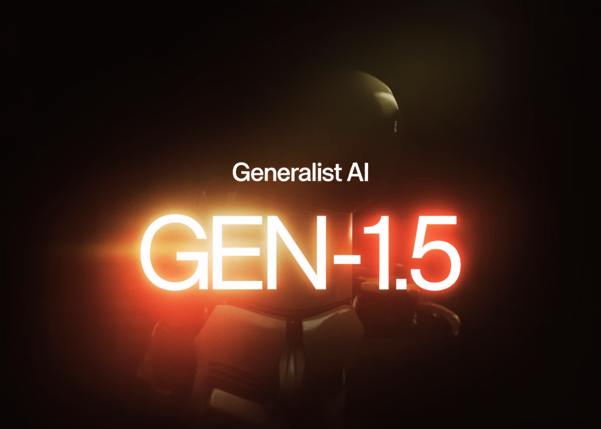

07 MarkTechPost 게시일 2026.08.24
GEN-1.5, 12초 시연으로 로봇 작업 학습

로봇은 새 작업을 배울 때 보통 많은 시연 데이터와 별도 튜닝이 필요하다. Generalist AI는 이 비용을 크게 줄일 수 있는 연구 결과를 내놨다. GEN-1.5는 3초에서 12초 사이의 시연 한 번만 보고도 새 물리 작업을 수행했다. 다만 아직 제품이 아니라 연구 공개다.
핵심 브리핑
GEN-1.5는 새 로봇 작업을 한 번의 시연으로 배우는 로봇 파운데이션 모델이다. 영상, 센서, 언어, 고유감각 입력을 함께 받는다. 30초 문맥창 안에 시연 데이터를 넣으면, 로봇이 그 작업을 바로 수행한다. 별도 미세조정이나 작업별 프로그래밍은 필요 없다고 Generalist AI는 설명했다.
핵심 메커니즘은 physical prompting이다. 센서 흐름과 행동 궤적을 문맥창에 넣고, 남은 구간에는 현재 관측을 계속 채운다. 모델은 경사하강 단계 없이 즉시 행동을 낸다. 회사는 이 능력을 위해 구조를 바꾸지 않았고, 메타러닝 루프나 보조 목적함수도 넣지 않았다고 밝혔다.
- 문맥창 길이는 30초다
- 출력은 100 Hz 행동 궤적이다
- 사전학습은 8개월 이상 이어졌다
- 데이터는 가정, 창고, 공장에서 수집했다
- 공개 가중치, API, 가격 페이지, 셀프서비스 제품은 없다
성능 수치도 함께 공개했다. 10개의 다양한 조작 작업에서 사전학습 모델 그대로 59% 성공률을 냈다. 표준편차는 ±10%다. 작업당 5분 데이터와 10번의 경사하강 단계로 83%까지 올랐다. 표준편차는 ±9%다. 보유하지 않은 작업에서 1분 데이터와 1번의 경사하강 단계만으로 66.5%를 기록한 사례도 제시했다.
회사는 이 결과를 과장하지 않았다. 작업은 단순하고 짧은 호라이즌이라고 스스로 적었다. 지금 단계는 연구 신호로 봐야 한다. 누구나 바로 써볼 수 있는 배포물은 없다.
스펙과 도입 조건
이 결과는 인상적이지만, 도입 조건은 아직 까다롭다. Generalist AI는 GEN-1.5를 자사 로봇 플릿과 데이터 엔진에서만 운영한다. 지금 사용하려면 직접 파트너십을 맺어야 한다.
공개 조건은 제한적이다.
- 가중치는 공개하지 않았다
- API도 없다
- 가격도 없다
- 셀프서비스 제품도 없다
- 연구 공개이므로 상용 배포 시스템으로 보기는 어렵다
연산 관점에서 눈에 띄는 점은 적응 비용이다. 로봇 정책 적응은 보통 수만 번의 경사하강 단계를 요구했다. 여기서는 10번만으로도 효과가 컸다. 이때 가중치 변화는 보유하지 않은 작업에서 0.15% 미만이었다. 회사는 이를 새 표현을 만드는 학습보다, 이미 가진 지식을 재배치하는 조정에 가깝다고 설명했다.
업계의 움직임
아직 공개된 반응은 제한적이다. 회사는 연구 게시글과 발표 스레드를 내놓았지만, 외부 도입 사례나 경쟁사 대응은 확인되지 않았다. 현재로서는 로봇 파운데이션 모델이 스케일만으로 어떤 능력을 얻는지 보여주는 연구 신호에 가깝다.
시사점과 체크포인트
금융IT 기업이 직접 로봇을 운영하지 않더라도, 이 결과는 현장 자동화와 물류 자동화 파트너를 볼 때 기준이 된다. 핵심은 한 작업마다 긴 튜닝 프로젝트를 다시 하지 않아도 되는지다.
우리 회사 관점의 체크포인트는 이렇다.
- 물리 자동화 파트너를 쓴다면 작업별 데이터 수집 시간을 계약서에 어떻게 반영할지 본다
- 운영 팀은 새 작업 추가 때 사람 개입이 어디까지 줄어드는지 검증 항목을 만든다
- 리스크 팀은 실패율 59%와 83%가 어떤 작업 정의에서 나온 값인지 세부 범위를 확인한다
- 구매 팀은 연구 공개와 상용 지원을 구분해 본다
주의할 점이 크다. 현재는 제품이 아니다. 작업도 단순하고 짧다. 성능 수치만 보고 범용 로봇 도입을 기대하면 안 된다. 다만 적응 연산량과 데이터량이 줄어들면, 앞으로 현장 자동화 프로젝트의 비용 구조는 달라질 수 있다.
주요 용어
원문 정보
제목: Generalist AI Releases GEN-1.5: A Robot Foundation Model That Learns New Tasks From One 3–12 Second Demo
게시일: 2026.08.24
출처 URL: https://www.marktechpost.com/2026/08/24/generalist-ai-releases-gen-1-5-a-robot-foundation-model-that-learns-new-tasks-from-one-3-12-second-demo/